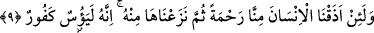
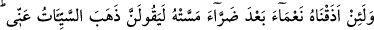
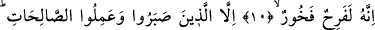
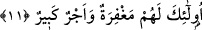

NÎMETLERLE İMTİHAN
9. Eğer insana tarafımızdan bir rahmet tattırsak, sonra da onu kendisinden çekip
alsak, hemen ümitsizliğe kapılır, nankör olur.
10. Eğer kendisine dokunan bir zarardan sonra ona bir nimet tattırsak, mutlaka
“Kötülük benden gitti der, sevinir, övünür.”
11. Ancak sabredip güzel işler yapanlar böyle değildir. İşte onlar için bir
bağışlanma ve büyük bir mükâfat vardır.
“Eğer insana tarafımızdan bir rahmet tattırsak” sağlık, esenlik, varlık vb. bir nimet
versek, tadına varacağı biçimde kendisine ulaştırsak...
Buradaki insandan maksad, ilerideki istisnanın delâlet ettiği gibi mü’mini de kâfiri de
içine alan mutlak insandır. “Tarafımızdan” ifadesi, rahmetin durumunu gösteriyor. Yani
kendi istihkakı olarak değil sırf bizden olarak.
“sonra da onu kendisinden çekip alsak” bu nimeti kendisinden alıp izâle etsek…
Burada “ __WORD__/çekip alma” fiilinin getirilmesi, insanın nimete şiddetle bağlandığını, ona
karşı çok haris olduğunu göstermek içindir.
Müfti Sa‘dî şöyle der: “Zâhir olan ‘nimeti kendisinden çekip alsak’ mânâsınadır.
Allah daha iyi bilir, nimetin çekilip alınmasının temelinde Allah’a karşı ma‘siyet irtikab
edenin kendi nefsinin uğursuzluğu/kötülüğü yatmaktadır.
“hemen ümitsizliğe kapılır” kendisinden alınan bu nimetin bir daha geri döneceğine
hiç ümidi kalmaz; sabrı ve Allah’ın hükmüne, kazâsına teslimiyeti az olduğundan ve
Allah’a güvenmediği için hemen Allah’ın fazl u kereminden ümidini keser “nankör
olur.” Kendisine daha önce verilen nimetleri unutarak nankörlük eder.
Sa‘dî şöyle der:
Bir köpeğe bir lokma versen onu unutmaz
Yüz kere ona taş vursan kapını terk edip gitmez
Ama bir zaman bir alçağı gözetip okşasan
Azıcık bir bahaneyle seninle cenk eder